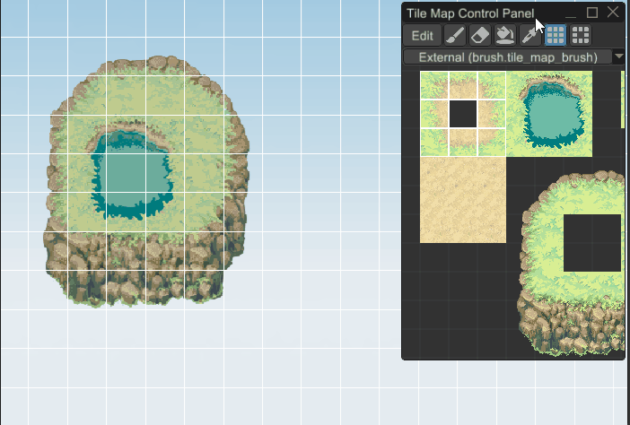
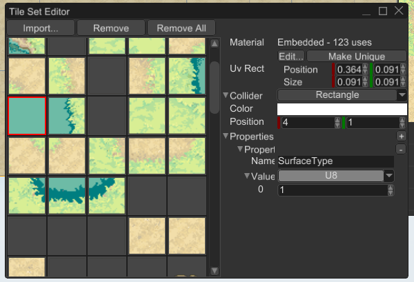

Tile Map
Tile map is a 2D "image", made out of a small blocks called tiles. Tile maps used in 2D games to build game worlds quickly and easily.
⚠️ This functionality is available only on nightly version of the engine and will be a part of the next stable release. If you want to use it, read this chapter to learn how to switch to the nightly version of the engine.
An example of a tile map could be something like this:

How to Create
As usual, there are two major ways of creating a tile map - via code or via the editor. Code-based approach is ideal for procedural worlds, while the editor-based approach is good for hand-crafted worlds.
Code
The following example creates a simple tile map with two tile types - grass and stone. It creates stone foundation and lays grass on top of it.
#![allow(unused)] fn main() { fn create_tile_map(graph: &mut Graph) -> Handle<Node> { // Each tile could have its own material, for simplicity it is just a standard 2D material. let material = MaterialResource::new_ok(ResourceKind::Embedded, Material::standard_2d()); // Create a tile set - it is a data source for the tile map. Tile map will reference the tiles // stored in the tile set by handles. We'll create two tile types with different colors. let mut tile_set = TileSet::default(); let stone_tile = tile_set.add_tile(TileDefinition { material: material.clone(), uv_rect: Rect::new(0.0, 0.0, 1.0, 1.0), collider: TileCollider::Rectangle, color: Color::BROWN, position: Default::default(), properties: vec![], }); let grass_tile = tile_set.add_tile(TileDefinition { material, uv_rect: Rect::new(0.0, 0.0, 1.0, 1.0), collider: TileCollider::Rectangle, color: Color::GREEN, position: Default::default(), properties: vec![], }); let tile_set = TileSetResource::new_ok(ResourceKind::Embedded, tile_set); let mut tiles = Tiles::default(); // Create stone foundation. for x in 0..10 { for y in 0..2 { tiles.insert(Tile { position: Vector2::new(x, y), definition_handle: stone_tile, }); } } // Add grass on top of it. for x in 0..10 { tiles.insert(Tile { position: Vector2::new(x, 2), definition_handle: grass_tile, }); } // Finally create the tile map. TileMapBuilder::new(BaseBuilder::new()) .with_tile_set(tile_set) .with_tiles(tiles) .build(graph) } }
Please refer to the API docs for more info about each method.
Editor
Editor-based approach requires a bit of preparation, yet it is still simple. At first, create a scene, then you need a tile set, something like this:

It is a 11x11 sprite sheet for a top-down game. Now you need to create a tile set resource from this tile set. Navigate
the asset browser and click on + button near the search bar. Select TileSet resource and click OK. Find the resource
you've just created in the asset browser, double-click on it, and you should see something like this:

At this point you could add tiles individually, or import them all at once from a sprite sheet. Keep in mind, that unlike other game engine, Fyrox allows you to specify not just textures, but materials for each tile. This is much more flexible solution, since it allows you to have custom shaders for each tile. To sum everything up there are three ways of adding tiles to the tile set:
- Import from a sprite sheet - this way the engine will create a unique embedded material (based on standard 2D shader), that will use the sprite sheet as diffuse texture. Sprite sheet will be split into a number of tiles and each tile will have its own portion (texture coordinates) of the sprite sheet.
- Drag and drop a texture to the tile set - almost the same as the previous option, but the texture coordinates will take the entire image.
- Drag and drop a material to the tile set - the most flexible way, since it allows you to specify your own material for tile.
For simplicity, we'll use the sprite sheet. Click on Import button and drop the sprite sheet to the region with
checkerboard, set the appropriate number of rows and columns:

Now click Import and you should see something like this:

At this point you can select desired tiles and edit their properties in the inspector on the right side. As you can see you can change tile's material, texture coordinates, collider (more on this below), color.
Now we have the tile set, and we can start creating a tile map using it. Click Create -> 2D -> Tile Map and you should
see something like this:

If you look closely, the editor warns us about missing tile set. Find the tile set you've just made and drag'n'drop it
from the asset browser to the Tile Set field in the inspector. There's one more step before we can start editing the
tile map - we need a brush to paint on the tile map. Click + button in the asset browser and select TileMapBrush,
set a name for it and click OK. Now select the tile map scene node and click on + sign in the Brushes field, drag'n'drop
the brush you've just created to the newly created property. Navigate to the Tile Map Control Panel and select the
brush from the dropdown list. For now the brush is empty, the simplest way to fill it is to just drag'n'drop the tile set
to it:

At this point everything is ready for painting, click Edit button on the Tile Map Control Panel and you should see the
grid:

Select some tiles on the palette and start drawing:

Drawing Tools
There are number of tools (apart from the drawing itself) that could be useful while editing tile maps.
Erase

Erases tiles using the shape of the current brush, could be activated using Shift key or by clicking on the
button with eraser icon.
Flood fill

Fills a region with the same tile kind (or empty space) using random tiles from the current brush. Could be activated using the button with paint bucket icon.
Pick

Picks a rectangular region of tiles from the tile map itself and turns them into the current brush. Could be
activated using Alt key or by clicking the button with pipette icon.
Rectangular fill

Fills a rectangular region with the tiles from the current brush. It tiles the given region using the
tiles from current brush. Could be activated using Ctrl key of by clicking on the button with the tiles icon.
Nine slice

Fills a rectangular region using a 3x3 brush (the size limitation could be dropped in the future). The corners of the brush will be placed at the corners of the selected region, the middle tiles between corners will be duplicated from corner to corner. The center tile will be used to fill the rest of the rectangle.
Physics
Tile maps supports physics for tiles, and it could be enabled by using special collider shape called TileMap. In code
it could be done something like this:
#![allow(unused)] fn main() { fn add_tile_map_physics(tile_map: Handle<Node>, graph: &mut Graph) { // Create a new collider with tile map shape. let collider = ColliderBuilder::new(BaseBuilder::new()) .with_shape(ColliderShape::TileMap(TileMapShape { tile_map: GeometrySource(tile_map), })) .build(graph); // Create a static rigid body with the tile map collider. let rigid_body = RigidBodyBuilder::new(BaseBuilder::new().with_children(&[collider])) .with_body_type(RigidBodyType::Static) .build(graph); } }
In the editor it could be done by creating a static 2D rigid body with a 2D collider that has TileMap shape:

Layers
Tile map does not support any layers on its own, but layers could be added very easy by simply creating another tile map with its own tile set and shifting this new layer by Z axis towards camera on some small value.
Tile Properties
Tile set could contain custom properties for each tile, these properties could be used to attach additional information to the tiles in your game. This could include surface type (water, lava, dirt, etc.), physics properties (friction, restitution, etc.) and any other you need. This is how it could be used in a game:
#![allow(unused)] fn main() { const SOIL: u8 = 1; const SLIME: u8 = 2; fn create_tile_map_with_props(graph: &mut Graph) { let material = MaterialResource::new_ok(ResourceKind::Embedded, Material::standard_2d()); let mut tile_set = TileSet::default(); let stone_tile = tile_set.add_tile(TileDefinition { material: material.clone(), uv_rect: Rect::new(0.0, 0.0, 1.0, 1.0), collider: TileCollider::Rectangle, color: Color::BROWN, position: Default::default(), properties: vec![Property { name: "SurfaceType".to_string(), value: PropertyValue::U8(SOIL), }], }); let slime_tile = tile_set.add_tile(TileDefinition { material, uv_rect: Rect::new(0.0, 0.0, 1.0, 1.0), collider: TileCollider::Rectangle, color: Color::GREEN, position: Default::default(), properties: vec![Property { name: "SurfaceType".to_string(), value: PropertyValue::U8(SLIME), }], }); let tile_set = TileSetResource::new_ok(ResourceKind::Embedded, tile_set); // .. } fn calculate_speed_factor(tile_map: &TileMap, player_position: Vector3<f32>) -> f32 { let grid_position = tile_map.world_to_grid(player_position); if let Some(tile) = tile_map.tiles.get(&grid_position) { if let Some(tile_set) = tile_map.tile_set() { if let Some(tile_set_data) = tile_set.data_ref().as_loaded_ref() { let tile_definition = &tile_set_data.tiles[tile.definition_handle]; if let Some(property) = tile_definition .properties .iter() .find(|p| p.name == "SurfaceType") { if let PropertyValue::U8(surface_type) = property.value { return match surface_type { SOIL => 1.0, // Green slime tile slows down the player. SLIME => 0.7, _ => 1.0, }; } } } } } 1.0 } }
Here we have two types of tiles - soil and slime, soil does not have any effect on player's movement speed, while the slime slows down the player by 30%. This code does not actually use any physical contact information and just uses tile position, but it could be fixed pretty easily - supply physical contact position to it, and it will return correct results.
Tile custom properties could be edited in the tile set editor:
